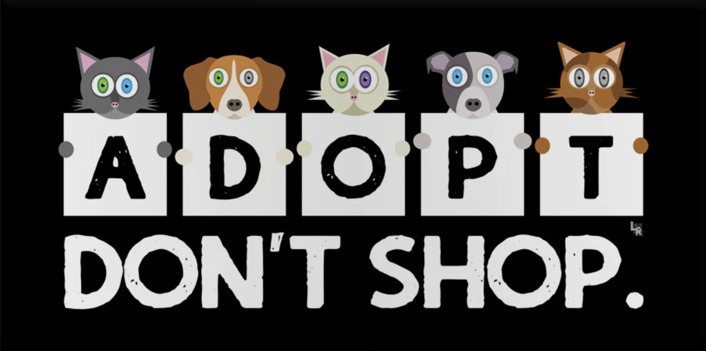

Why I Encourage Cat Adoption in China?
When I was a child, I usually see homeless cats wondering around in the park near my home in Shanghai. When I grew up, I realized that there are so many homeless cat in China and they could be found almost in every residential area and park. There wasn't as much as homeless cat in other places that I have lived such as Hong Kong or Los Angeles. Later, my mom and I started to feed homeless cats near our home daily. We are warmed by these cute little cats that we remembered and named the ones we are familiar with and tried to find them everyday. Then, we realized the sad fact that they disappered one by one. Sometimes it is because the wheather is too cold and they get ill and die, sometimes they just suddenly dissapear and never come back. On the other hand, more and more new kittens are born and there are always many homeless cats in the park. We started to realize that only feeding them is not enough and we are tired to see the death of the cats that we know. Therefore, we tried to take pictures of homeless cats that are young or not afraid of humans and sent their photos online to find homes for them. We are doing this in a relatively small scale and I am making this website to invite more people in China to either join us or adopt an aorable homeless cat. Below are some more informations about homeless cats as well as cats marktet.